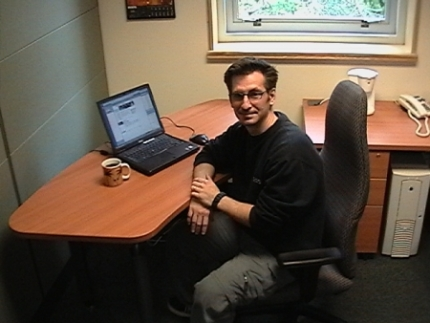
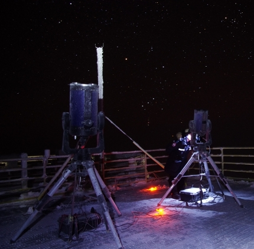
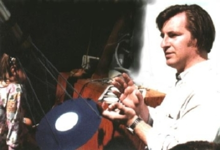

|

My focus is on delivering the best science from Canada's premier twin 8-m telescopes. Along with leading the Canadian Gemini Office, and supporting observations by astronomers with all of that facility's optical/infrared instruments, I investigate methods of high-spatial-resolution photometry and spectroscopy.

Turbulence in the Earth's atmosphere distorts incoming wavefronts, causing blurry images. Adaptive optics corrects this blurring in real time, and for the best astronomical observing sites can provide data as good as from space.To exploit that, I have pursued innovative calibration and image-processing techniques, along with instrument simulations plus practical site-testing fieldwork - including from the world's northernmost high coastal mountains, at the tip of Ellesmere Island, Canada. All this is with the aim of better understanding distant quasars, galaxy evolution and underlying cosmological effects.

My complete CV is available here (reformatted to a full page) and my contact information is above. Please feel free to get in touch.
|